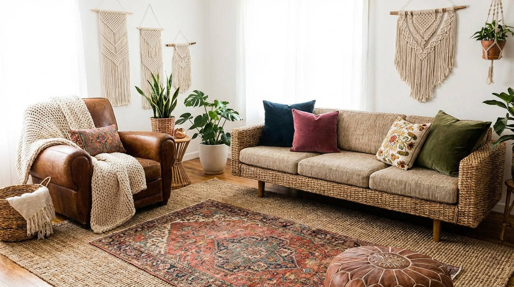
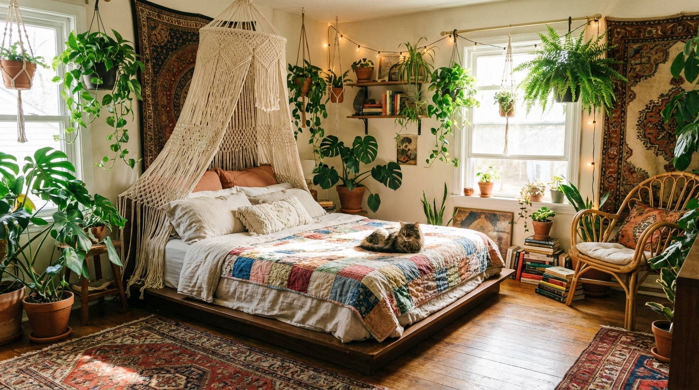

Boho Home Decor Ideas for a Warm and Natural Atmosphere
Boho style is relaxed, layered, and full of texture. The goal is a home that feels warm, collected, and easy to live in without looking busy.
Updated March 26, 2026 | 8 minute read
Introduction
Boho decor is about warmth and authenticity. It mixes natural materials, soft textiles, and a few global details into a space that feels personal and inviting. The best boho rooms balance relaxed layers with a clear palette, so the look feels curated rather than cluttered.
A warm boho home is built through texture. Think woven baskets, linen, wood, and matte ceramics. When the materials feel grounded, the room feels calm. The ideas below focus on practical, easy ways to bring boho warmth into any room without overfilling the space.
Boho style also benefits from restraint. Instead of adding everything at once, build a base and layer over time. A single woven piece, one soft throw, and a few collected objects can do more than a crowded shelf. This slow approach keeps the room feeling light while still rich in character.
Consider how the room feels at different times of day. Warm morning light pairs beautifully with soft textiles, while evening light highlights texture. A simple shift in lighting can deepen the cozy mood.
Boho Decor Ideas
Choose a few ideas that fit your home and build from there. Boho style feels best when every layer has room to breathe.
A helpful guideline is the three-layer rule: one grounding piece, one soft layer, and one personal detail. For example, a jute rug, a linen throw, and a handmade bowl can create a complete moment without adding visual weight. This keeps the room feeling curated and easy to maintain.
1. Start With a Warm, Earthy Base
A boho room feels grounded when the base palette is warm and natural. Soft whites, sand, clay, and terracotta create a calm foundation for layered textures.
- Use warm neutrals on large surfaces like walls and rugs.
- Repeat earthy tones in textiles and accents for cohesion.
- Keep brighter colors minimal so the room stays relaxed.

Boho living space.
2. Layer Textiles for Softness
Boho rooms feel cozy when textiles are layered. Mix a textured throw, a woven rug, and a few pillows in complementary tones to add depth without clutter.
- Blend linen, cotton, and knits for contrast.
- Keep patterns subtle and repeat one color across layers.
- Let one textile stand out while the rest stay calm.
3. Use Natural Wood and Woven Pieces
Natural materials are a boho essential. Light wood, rattan, jute, and cane add warmth and a relaxed, organic feel to the room.
- Choose furniture with visible wood grain.
- Add a woven basket or tray for practical storage.
- Repeat one natural material in multiple spots.
4. Add Low, Cozy Seating
Boho rooms often feel more relaxed with lower seating. Floor cushions, a low bench, or a compact lounge chair creates a casual, welcoming vibe.
- Keep seating soft with cushions or textured throws.
- Use one low piece so the room still feels balanced.
- Leave open space around the seating for flow.
5. Introduce Plants for Natural Movement
Plants bring life to boho spaces. They soften edges and add gentle movement that works well with the relaxed aesthetic.
- Use one larger plant and a few smaller accents.
- Choose simple planters that match the palette.
- Group plants in one zone to avoid visual clutter.
6. Mix Patterns in a Controlled Way
Boho style can handle pattern, but it still needs restraint. Mixing two or three patterns in related colors keeps the space vibrant without feeling chaotic.
- Use one statement pattern and keep others subtle.
- Repeat one color across patterns for unity.
- Balance patterned pieces with solid textures.
7. Add Handcrafted or Vintage Touches
The boho look feels personal when it includes handcrafted details or a few vintage accents. These pieces add story without overwhelming the room.
- Choose one or two handcrafted items per room.
- Keep finishes matte and natural for warmth.
- Let these pieces be focal points rather than filler.

Cozy boho bedroom.
8. Use Soft, Ambient Lighting
Warm light enhances boho textures. Layered lighting makes the room feel calm and welcoming in the evening.
- Use warm bulbs to keep the glow soft.
- Add a table lamp and one accent light for depth.
- Keep lamp shapes organic and simple.
9. Keep Surfaces Styled but Clear
Boho spaces still need breathing room. A few curated objects on a shelf or coffee table feel intentional, while overcrowding can make the room feel heavy.
- Limit each surface to a small cluster of items.
- Use a tray to contain smaller pieces.
- Leave open space so the textures can stand out.
How to Style a Boho Home
Start With Texture, Then Add Color
Boho rooms are defined by texture. Begin with woven, linen, and wood layers, then add soft color through textiles or art. This keeps the room grounded and cohesive.
If you are unsure how much color to add, start with one accent tone and repeat it subtly. A muted terracotta pillow, a warm clay vase, and a soft rust throw can bring life to the room without making it feel busy. Color is most effective when it is deliberate and limited.
- Use natural materials for the foundation.
- Add color through smaller accents for flexibility.
- Repeat textures across rooms to keep the home cohesive.
Balance Collected Pieces With Open Space
A boho home feels curated when there is room between the layers. Balance your collected pieces with open space so the room feels light and easy.
- Remove one item for every new piece you add.
- Keep at least one wall or surface mostly open.
- Let focal pieces stand alone rather than stacking too many.
Keep the Palette Warm and Cohesive
Warm tones make boho rooms feel grounded. Use earthy colors as the base and add gentle accents that complement them.
- Choose two or three main tones and repeat them often.
- Add contrast with a deeper brown or muted rust.
- Use black sparingly to add definition.
Common Mistakes to Avoid
Boho decor can quickly feel messy if there is no restraint. These mistakes often make the space feel heavier than intended.
- Layering too many patterns without a cohesive palette.
- Using too many small accessories and losing visual calm.
- Skipping storage and letting baskets overflow.
- Mixing too many bright colors at once.
- Forgetting to leave negative space for balance.
Conclusion
Boho decor is most beautiful when it feels warm and natural. Focus on texture, keep the palette grounded, and let a few collected pieces tell the story.
Start with the foundation, layer slowly, and edit often. With a balanced approach, a boho home feels cozy, relaxed, and timeless.
If you want a quick refresh, swap one textile and add one natural element. A new woven basket or a soft throw can instantly warm the room without changing the whole layout. Small updates keep the style fresh while preserving the calm atmosphere.